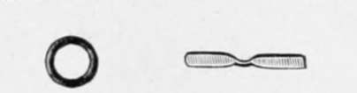

The Fishing-Rod, And Its Amateur Manufacture. Part 3
Description
This section is from the book "American Game Fishes", by W. A. Perry. Also available from Amazon: American Game Fishes: Their Habits, Habitat, and Peculiarities; How, When, and Where to Angle for Them.
The Fishing-Rod, And Its Amateur Manufacture. Part 3
The ordinary rings for fly-rods are shown in fig. 9. They consist simply of a round metal ring held on the rod by the tie, which is whipped with silk. This is a useful ring for fly-fishing only, and even then not wholly satisfactory, because of the severe friction on the line. Nothing is so discordant to the finished angler as friction in regard to any part of his gear. It sets his teeth on edge. Hence the folding rings (fig. 9) "must go."
Tip-rings are extremely various in make. One of the best is that shown at fig. 10. It simply consists of a hard ring-agate, preferably-set between two uprights so that it will be freely movable according to the angle assumed by the line. Of course the size is regulated to suit the rod, though a comparatively large ring is undeniably to be preferred over small ones. Fig. 11 also shows a ring, not on the market, but the like of which I made fifteen years ago. It consists of a ball and socket joint. As will be perceived, it will move in any direction, but needs to be exceedingly well made to stand wear and tear. Fig. 12 shows the solid agate tip ring; and its neat and effective appearance needs no commendation. If one can afford to put a jeweled tip to his rod, the saving in the wear and tear of the line amply compensates him. For myself I am content with the ring shown in fig. 13. It is simply a bended wire, but so far as its efficiency is concerned, is quite equal to more elaborate contrivances. Perhaps the best rings of the whole number are figs. 12 and 13-only do not hesitate to have them large.
Fig. 9.
Fig. 10.
Ferrules form an important part of the ordinary rod, and require some careful consideration.
It has been pretty generally thought that the shape of the male ferrule should be as shown in fig. 14-that is, provided with a dowel (A). This was supposed to render the joint more secure, and probably to render it more pliant and elastic.
It certainly does not allow a joint to be secure, unless the latter is tied in, for the wedge-shape of the dowel is precisely the shape of all others most likely to loosen the joint in the act of casting, etc. In the most approved rods of the present day this dowel is, however, omitted, and thus we witness another return to first principles-for my father bought and made rods after this style at least twenty-five years ago, to my certain knowledge, and he always preferred the undow-eled ferrule.
Fie. li.
Fig. 12.
Fig-13.
Fig. 14.
This ferrule is shown in fig. 15, and 1 and 2 in the diagram represent the points of contact between the male and female ferrule. Both at 1 and 2, plates of metal should be soldered, that the entire arrangement may be water-proof.
Fig. 15.
Most English rods, of this day, not only possess the dowel, but are so ill-fitted that the bayonet-fastening, screw, or loops of wire, at each end of ferrule, are necessary to keep the rod from throwing asunder. This is simply a confession of bad workmanship-there is no reason for it in the climate, as I have heard it plausibly suggested. The fact is, the ferrules are not "trued" one to the other, and they are not of the right material. Most of them are of brass, and very few are of german silver. This latter metal is the best for a ferrule intended to hold together by its own cohesion.
Of course the metal must be flawless and hardened-the tubing should be drawn inside and out-that is through an annular die, upon a highly smooth mandrel, and I prefer grinding the two parts together with very fine emery and oil and afterward rotten stone and oil, until the surfaces are absolutely smooth-so smooth in fact as to require quite a little force to put them into place. After these ferrules have been together a few minutes, and the condensed air has gradually found its way out, it is almost impossible to pull them asunder quickly, owing to the vacuum existing and the pressure of the atmosphere outside-in fact, in the ferrule made as I suggest, they form an actual pneumatic tube similar to that of the air-pump.
The weakest part of the rod has hitherto been at the junction of the ferrule and the wood-in a word, at 3, fig. 15. Ferrules made as fig. 15 represents at 3, "3", are destructive. They are not fit for a fine elaborate rod, because, as no chain is stronger than its weakest link, so this weak spot is a blemish as bad as a spavin on a pacer. The rod is certain to give way at that point before it does anywhere else, and there is no help for it as long as the ferrule is of the shape shown.
All great discoveries are simple, and that shown at fig. 16 is at once simple and great; it is the ideal ferrule, and if I know it I will never purchase a rod without it. Unfortunately it is patented- though I presume the amateur will not find difficulty in getting permission to use it-and therefore only the best makers are licensed to use it. Precisely how this matter stands, I do not know.
It will be seen that the serrated edges do not bear on the wood at all to its detriment, but rather as a support; and at the same time they take off the strain which, were they not there, would come on the solid part of the ferrule just above them. The device is a perfect adaptation of the means to the end.
The ordinary reel-seat is confessedly inconvenient. It is shown at fig. 17 as now made, and it must be admitted that when the material is german silver it presents a handsome appearance. But it does not allow of various sized reel-plates being fastened, and herein lies the disadvantage. Notwithstanding the standard of sizes once adopted by the National Rod and Reel Association, few makers make to it; and the result is that only one or two reels that you meet in a life-time fit the reel-seat. Then again the band is forever working up, unless it fits very tight; and who amongst my experienced readers has not met with that awful catastrophe- a disengaged reel, just loosened at the period of greatest agony and excitement, when the fish is doing his best to run all the line out? Even now I could groan at the loss of one might}' Salmo at least, through this very cause.
Fig. 16.
American ingenuity, however, comes to the rescue again (fig. 18). The upper and lower receptacle for the plate-ends are tapered-hence they can take from the least to the largest, and the upper band is movable. It is shown at A. Moreover, behind it is placed an ingenious clutch-which is shown out of gear in A, and in situ in the larger diagram (fig. 18). I have seen it on Trout, Bass and Salmon rods, and it works like a charm.
Continue to:
- prev: The Fishing-Rod, And Its Amateur Manufacture. Part 2
- Table of Contents
- next: How To Make A Fishing Rod